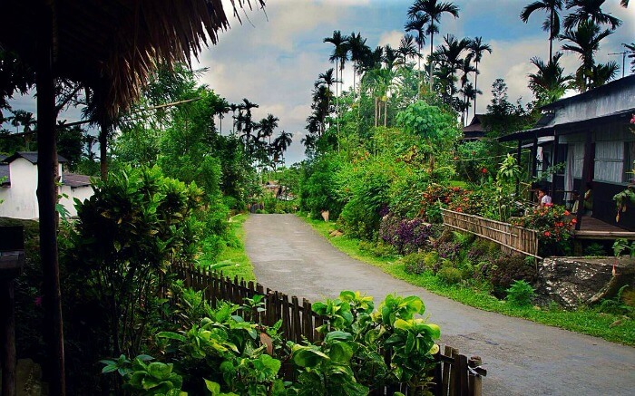
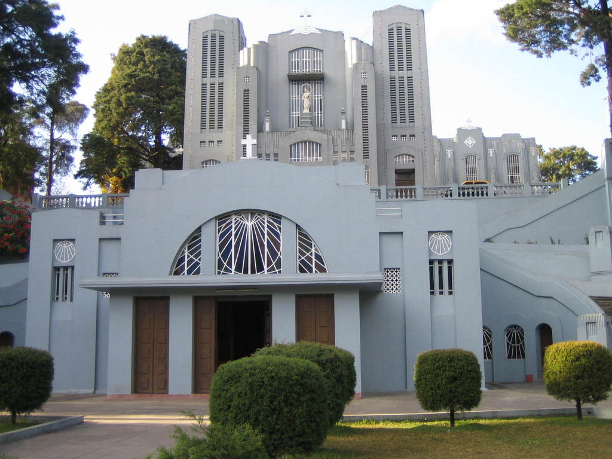

"Meghalaya — meaning 'Abode of Clouds' — is a mystical plateau state draped in mist and waterfalls. Home to Cherrapunji, one of the wettest places on Earth, and the incredible living root bridges of the Khasi people. The state enchants visitors with its crystalline rivers, sacred groves, and the warmth of its matrilineal tribal societies."
"मेघालय — 'मेघों का घर' — एक रहस्यमयी पठार राज्य है जो कोहरे और झरनों से आच्छादित है। यहाँ चेरापूँजी है, जो पृथ्वी के सबसे अधिक वर्षा वाले स्थानों में से एक है, और खासी लोगों के अविश्वसनीय जीवित जड़ पुल।"
PLACES TO VISIT / घूमने के स्थान


DOUBLE DECKER LIVING ROOT BRIDGE
नोगरियाट जीवित जड़ पुल
One of the most extraordinary natural structures on Earth. The Khasi people trained rubber tree roots across rivers over 500+ years.
पृथ्वी पर सबसे असाधारण प्राकृतिक संरचनाओं में से एक। खासी लोगों ने 500+ वर्षों में रबर पेड़ की जड़ों को नदी के पार प्रशिक्षित किया।


DAWKI RIVER
डाउकी नदी
The cleanest river in Asia, where boats appear to float in mid-air due to the unbelievable transparency of the water.
एशिया की सबसे साफ नदी, जहाँ नाव हवा में तैरती हुई दिखती है क्योंकि पानी कांच जैसा पारदर्शी है।




MAWLYNNONG VILLAGE
एशिया का सबसे स्वच्छ गाँव
Asia's Cleanest Village. This Khasi village is a model of community cleanliness and eco-tourism. Features a natural balancing rock.
एशिया का सबसे स्वच्छ गाँव। यह खासी गाँव सामुदायिक स्वच्छता का आदर्श है। बांग्लादेश सीमा ट्रेक करें।


NOHKALIKAI FALLS
नोहकालिकाई जलप्रपात
India's tallest plunge waterfall at 340 meters. The falls plunge into a strikingly green pool below.
भारत का सबसे ऊँचा प्लंज जलप्रपात (340 मीटर), चेरापूँजी के पास। यह नीचे हरे रंग के तालाब में गिरता है।




SHILLONG
शिलांग
The capital of Meghalaya and one of India's most charming hill stations. Nicknamed 'Scotland of the East'.
मेघालय की राजधानी और भारत के सबसे आकर्षक हिल स्टेशनों में से एक। 'पूर्व का स्कॉटलैंड' कहलाता है।
FOOD & CUISINE / भोजन
JADOH (जाडोह)
The most beloved dish of the Khasi people. Red rice cooked with pork or chicken, flavored with black sesame, ginger, and turmeric.
खासी लोगों का सबसे प्रिय व्यंजन। लाल चावल को सूअर या चिकन के साथ काले तिल, अदरक और हल्दी में पकाया जाता है।
TUNGRYMBAI
A pungent, deeply savory condiment made from fermented soybeans. An acquired taste but incredible umami flavor.
किण्वित सोयाबीन से बना तीखा, स्वादिष्ट मसाला। सूअर के व्यंजनों में सीज़निंग के रूप में उपयोग किया जाता है।
DOHNEIIONG
Pork cooked in black sesame seed paste — a Khasi signature dish. Gives the gravy a dark, nutty richness.
सूअर के माँस को काले तिल के पेस्ट में पकाया जाता है — खासी पहचान का व्यंजन।
SHOPPING / खरीदारी
CANE & BAMBOO PRODUCTS
Khasi traditional bamboo rain shields (knup) — conical back-worn umbrellas. Also: cane furniture and bamboo bottles.
मेघालय की बाँस शिल्प भारत की सर्वश्रेष्ठ में से है। खासी परंपरागत बाँस की वर्षा ढाल (नुप) और फर्नीचर।
KHASI SHAWLS & JAINSEM
The Jainsem is the traditional Khasi woman's dress — a two-piece silk outfit. Woven Khasi shawls with geometric patterns.
जैनसेम खासी महिला का पारंपरिक पोशाक है। ज्यामितीय पैटर्न वाले खासी शॉल उत्कृष्ट स्मारिका हैं।